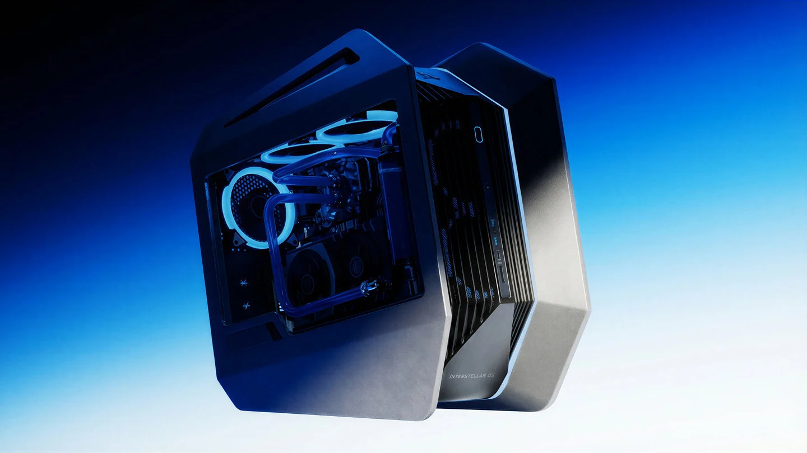
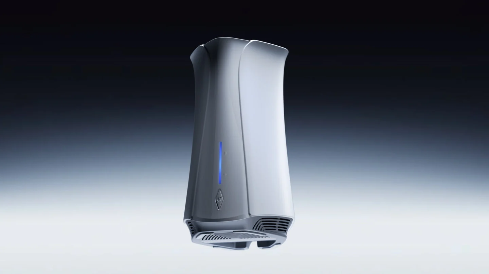
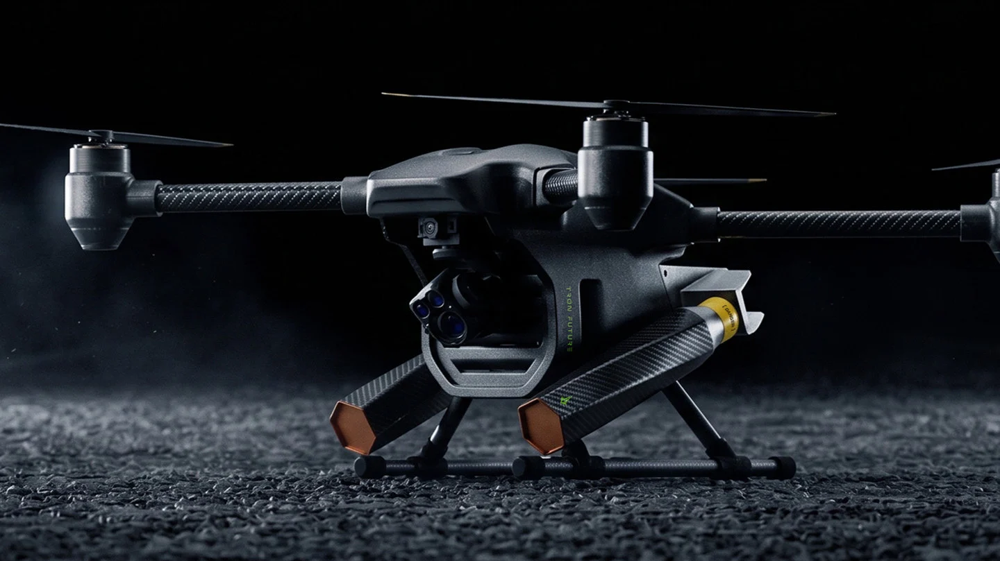
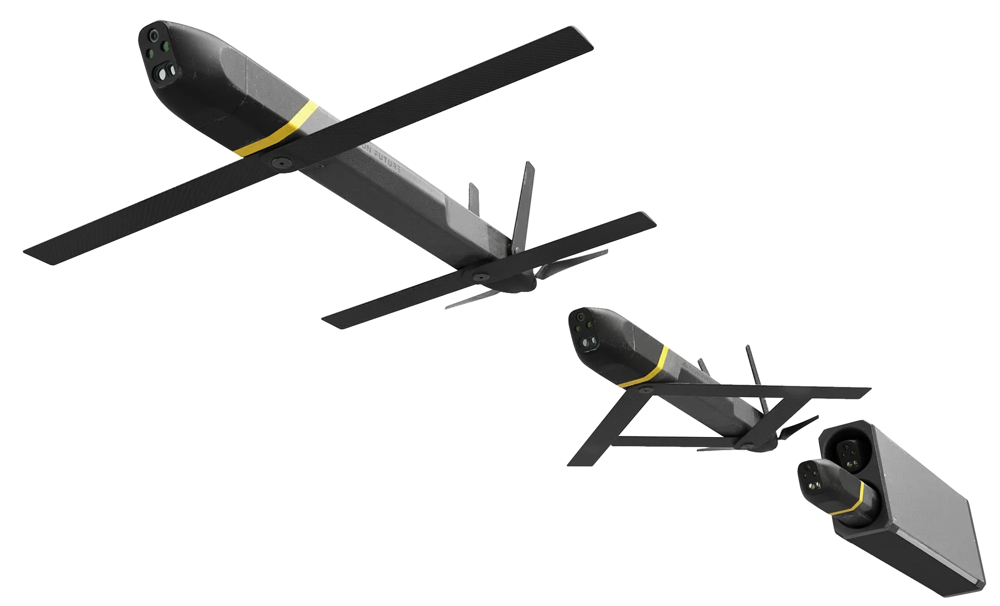

裝置
電腦：用滑鼠操作
網站互動提案（8 個，mockup）
每個提案都可以直接操作。上方切換「電腦 / iPad / 手機」會改變展示框的寬度，iPad 與手機模式下滑鼠會模擬「手指」的行為（例如按住才出現、點一下切換），讓您在電腦上也能感受觸控版。照片與字體都是網站上的真實檔案（Poppins）。這頁只是提案，網站本身沒有任何改動。
每個提案都尊重系統的「減少動態效果」設定（開啟時只保留靜態結果）。標示 推薦 的是我認為最符合您「專業、可信、不花俏」方向的。
01 細節放大鏡 Detail loupe 推薦
- 做什麼
- 在產品照片上出現一個方形放大鏡（2.6 倍），讓人看清楚表面處理、倒角、紋理等工藝細節 —— 工業設計作品最有說服力的地方。
- 放在哪
- 產品頁的特寫照與主視覺（T. Interceptor MP、T. Blade、Sagittarius…）。每頁挑 1–3 張高解析照片即可，不是每張都要。
- 電腦
- 滑鼠移到照片上就出現，跟著游標走；移開就消失。游標變成放大鏡圖示。
- iPad・手機
- 按住 0.25 秒才出現（一般滑動仍是捲動頁面，不會誤觸），放大鏡浮在手指上方避免被擋住，放開即消失。
- 成本・風險
- 低。需要用到原尺寸照片（放大時才載入，不影響首次載入速度）。方形細框，符合方正瑞士風格。
02 首圖景深 Hero depth 可選
- 做什麼
- 首圖與上面的文字分成兩層，跟著游標往相反方向微微移動（最多十幾 px），捲動時照片也比文字慢一點，產生「產品在空間裡」的景深感。
- 放在哪
- 首頁輪播首圖、各產品頁最上方的大圖。
- 電腦
- 滑鼠在首圖上移動 → 照片與標題輕微反向位移，緩動跟隨（不會抖）。
- iPad・手機
- 沒有游標，改成跟著捲動：往下捲時照片比文字慢（視差）。不使用手機陀螺儀（iPhone 需要跳出授權視窗，體驗不好）。
- 成本・風險
- 低～中。和目前首頁輪播、`100svh` 首圖高度要一起處理；位移量要很小才顯得高級，太大會像廉價特效。
Defense · RoboticsT. Guardian
03 標題揭示 Heading reveal 可選
- 做什麼
- 段落大標題捲進畫面時才「出現」。兩種風格可選：A 解碼（字母快速跳動後定格，偏科技、國防感）；B 逐字浮現（每個字由下往上滑出，較安靜、編輯感）。
- 放在哪
- 首頁 SELECTED WORKS / END-TO-END / ACHIEVEMENTS 等段落標題、About 的章節標題。只用在大標題，內文不用。
- 電腦／觸控
- 三個平台一樣：捲動到看得到時播放一次，不需要任何操作。
- 成本・風險
- 低。A 比較搶眼，用太多會花俏，建議只用在首頁 2–3 個標題；B 可以全站使用。對讀螢幕軟體仍讀到正確文字。
風格
04 照片揭幕 Photo reveal 推薦
- 做什麼
- 照片第一次捲進畫面時，用一道乾淨的「開窗」顯露出來，同時從 1.14 倍慢慢縮回原尺寸。三種開法：由中線往兩側、由下往上、藍色色塊掃過（--jcd-blue，品牌感最強）。
- 放在哪
- 產品頁的大照片、類別頁卡片第一次出現時。會取代目前的淡入（scroll fade-in），不是疊加。
- 電腦／觸控
- 三個平台一樣，捲動觸發，每張只播一次。
- 成本・風險
- 低。純 CSS，效能好。注意：要避免和產品頁最後一張的捲動揭幕（.jcd-reveal）重複。
開法



05 設計重點標註 Design hotspots 推薦
- 做什麼
- 在產品主視覺上放 3–4 個小方形標記（01、02、03），滑過或點一下就跳出說明：這裡做了什麼設計決策、為什麼。把「漂亮照片」變成「設計思考」，對招募者與客戶最有說服力。
- 放在哪
- 產品頁的主視覺或爆炸圖（每頁一張）。內容由您寫，下面的文字只是示意。
- 電腦
- 滑過標記 → 毛玻璃說明框浮出，標記變藍；移開關閉。
- iPad
- 點一下標記打開、再點一下或點別處關閉（每個標記有 46px 隱形觸控範圍）。
- 手機
- 畫面太窄放不下浮動框，說明改顯示在照片下方的固定區塊，點不同標記就切換內容。
- 成本・風險
- 中。程式簡單，成本在於每頁要寫標註內容與定位置（我可以做一個像 phone-layout 的拖拉工具讓您自己放點）。
06 磁吸 >> Magnetic arrow 可選・只限電腦
- 做什麼
- 滑鼠靠近卡片右下角的「>>」時，它會被游標輕輕吸過去（最多約 10px），名稱也跟著微動；按鈕「Let's Talk」整顆被吸引並由左到右填藍。
- 放在哪
- 類別卡與首頁作品格的 >>（取代現在的「往右 3px」）、Contact 送出按鈕。
- 電腦
- 如上，移開時彈回原位。
- iPad・手機
- 手指沒有「靠近」這個狀態，所以觸控上沒有磁吸，保留現在的按下變藍、微縮。
- 成本・風險
- 低，但只有電腦看得到，屬於「錦上添花」。建議和其他提案一起做，不單獨做。
07 閱讀進度＋章節 Progress & chapters 推薦
- 做什麼
- 產品頁很長。頁首下緣一條 2px 藍線顯示讀到哪裡，右上角顯示目前章節「02 / 05 Design Concept」，點它打開章節清單直接跳過去。
- 放在哪
- 所有產品頁（白底頁也適用：藍線與文字顏色會配合白底）。
- 電腦／觸控
- 三個平台相同；手機上章節名稱縮成 9px 標籤，點擊範圍至少 44px。請在下面框內捲動試試。
- 成本・風險
- 中。章節名稱要從每頁的段落標題自動抓，或由您指定；要和現在的頁首 logo／選單排在一起不擠。
02
Design Concept

08 合作品牌跑馬燈 Logo marquee 可選
- 做什麼
- 首頁合作品牌牆（AT&T、Google Fiber、Ciena…）由靜態三排，改成三排交錯方向緩慢流動；頁面捲得越快它流得越快，停下來就回到慢速。
- 放在哪
- 首頁的品牌 logo 區、About 的 Trusted Collaboration。
- 電腦
- 滑過某一排就暫停並變亮，方便看清楚；可用滑鼠拖動。
- iPad・手機
- 手指左右拖動可以甩動它（上下滑仍是捲動頁面）。
- 成本・風險
- 低。注意：會動的 logo 比靜態的「難讀」，客戶名稱是信任背書，建議速度很慢；減少動態時恢復靜態三排。
總表
| # | 提案 | 位置 | 電腦 | 觸控 | 成本 | 建議 |
|---|
| 01 | 細節放大鏡 | 產品頁特寫照 | 滑過 | 按住 | 低 | 推薦 |
| 02 | 首圖景深 | 首頁／產品頁首圖 | 游標視差 | 捲動視差 | 低～中 | 可選 |
| 03 | 標題揭示 | 首頁、About 標題 | 捲動 | 捲動 | 低 | 可選（B 較穩） |
| 04 | 照片揭幕 | 產品頁、類別卡 | 捲動 | 捲動 | 低 | 推薦 |
| 05 | 設計重點標註 | 產品頁主視覺 | 滑過 | 點擊（手機在下方） | 中（要寫內容） | 推薦 |
| 06 | 磁吸 >> | 卡片 >>、Contact | 磁吸 | 無（保留按下變藍） | 低 | 可選 |
| 07 | 閱讀進度＋章節 | 所有產品頁 | 點擊跳章 | 點擊跳章 | 中 | 推薦 |
| 08 | 合作品牌跑馬燈 | 首頁 logo、About | 滑過暫停／拖動 | 拖動甩動 | 低 | 可選 |